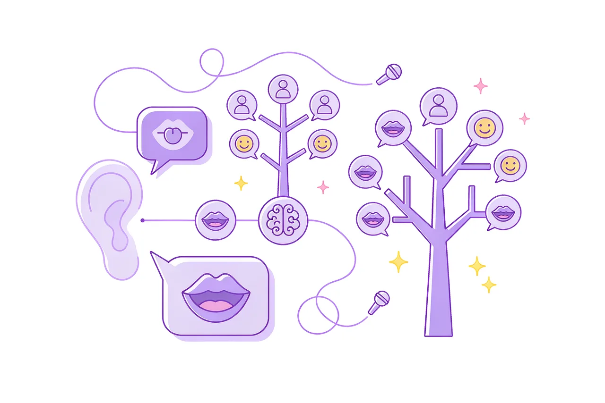

词汇识别与通达
研究书面与口语词汇的语音、正字法与语义表征如何被激活，探讨词频效应、语境约束与形态分解对识别速度的影响。典型现象是高频词识别更快、语义相关词会启动目标词，说明心理词典的组织既受使用经验也受当前语境调节。
交叉与新兴方向 · DISCIPLINE
Psycholinguistics
研究语言的心理加工机制与获得过程
心理语言学以语言的感知、理解、产生与习得中的心理机制为对象，融合语言学、心理学、认知科学与神经科学。它关注词汇识别、句法分析、语义整合与语篇理解，核心问题包括加工是否即时、模块是否独立以及语言与思维的关系。经典实验发现，读到语义不搭的句子结尾会诱发 N400 脑电成分，而句法异常常引起 P600，说明不同信息在时间进程中被加工。借助眼动、脑电与脑成像，该领域把抽象语言结构假设与可观察证据相联系，是认知科学的重要交叉分支，也为语言障碍评估与自然语言交互提供依据。

这个分支主要研究什么
研究书面与口语词汇的语音、正字法与语义表征如何被激活，探讨词频效应、语境约束与形态分解对识别速度的影响。典型现象是高频词识别更快、语义相关词会启动目标词，说明心理词典的组织既受使用经验也受当前语境调节。
考察句子结构的即时分析，讨论花园路径效应：读者按最常见结构理解句子，读到后段才发现走错，必须回退重新分析。研究比较句法自治与交互作用观点，关注语义和语境信息能否在早期影响结构选择。这为理解阅读回视提供线索。
分析语义整合、代词指代与语篇连贯的建立过程。背景知识会在理解时即时参与，例如读到“他打开箱子，书很重”，读者会推断箱子与书的关系。眼动与脑电研究显示，语境不符会迅速引起加工代价，说明语篇表征在持续更新。
探讨从意图到发音的规划过程，包括概念准备、词汇选择、音系编码与自我修正。口误常显示音系或词汇层面的交换，停顿与“嗯、啊”反映规划负担，研究用这些自然现象推断产生系统的分时加工与资源限制。停顿位置还能反映词汇频率效应。
研究儿童如何从输入中习得语音、词汇与规则，以及双语者两种语言的表征与控制。典型现象包括关键期后的语音口音差异、语言切换代价，以及两种语言间的迁移与竞争，研究关注经验、输入质量与执行控制的交互作用。这些都是可检验的假设。
这一分支能带来什么
学习这一方向能让你意识到理解不是读完整句才发生，而是在词与词接连出现的瞬间不断预测和修正。你会更善于发现歧义、解释阅读困难，也能更谨慎地看待读不懂就是态度不认真这类简单判断。
一项奠定了这个领域的研究
20 世纪 80 年代初，研究者利用事件相关电位技术研究句子理解，让被试阅读末尾词与前文语义不一致的句子，并同时记录脑电。结果发现，语义不匹配的词会诱发一个在刺激后约四百毫秒达到峰值、中央顶区最明显的负波，即 N400；语义匹配的词则不出现或幅度很小。后续研究表明，N400 幅度受语境约束强度和词频影响，语义越难整合波幅越大。该范式说明脑电指标可以实时反映语义加工，成为心理语言学研究语言理解的经典方法，也推动了神经语言学的建立。
还没定论的问题，往往最值得追问
一种观点认为句法分析是自治、早期完成的模块；另一种认为语义、频率与语境会立即影响结构选择。眼动与脑电证据各有支持，争论焦点在于信息交互发生的时间窗口与实验材料的生态效度。
语言相对性主张语言影响思维，但跨语言实验常发现有限效应；生成语法强调普遍结构，统计学习取向则强调输入的作用。两者在证据标准与可证伪性上仍有分歧。
把概念带回日常观察
请朋友缓慢念出句子“咬死了猎人的狗跑了”，你先说出第一理解，再听一遍并尝试另一种理解。多数人会先把它理解成猎人的狗被咬死，随后才发现也可能是咬死猎人的那条狗跑了。记录自己重分析时的停顿感。仅作自我观察，不构成诊断。
怎么研究，用在哪里
进入这个分支的术语入口
与这一领域密切相关的名字
提出生成语法理论，深刻影响语言结构与语言能力的研究取向。
推动词频效应与短时记忆研究，是心理语言学实验取向的重要奠基者。